L'objectif de ce TP est de comparer trois détecteurs de contours, Sobel, Laplace et Canny, sur une série d'images. Un contour correspond à une variation brusque de l'intensité lumineuse. Chaque détecteur estime cette variation différemment, et chacun dépend de paramètres (taille du flou, taille du noyau, seuils) qu'il faut régler.
Pour que la comparaison soit objective, nous confrontons les cartes de contours obtenues à des contours de référence tracés à la main, issus de la base de l'Université de Groningue (RUG) : 40 images naturelles en niveaux de gris (animaux et objets dans leur environnement), chacune accompagnée de sa vérité terrain. Nous en déduisons trois mesures : la performance P, le taux de faux positifs TFP et le taux de faux négatifs TFN.
Le programme, écrit en C++ avec OpenCV, permet de choisir le détecteur, de régler ses paramètres avec des trackbars et de traiter le lot complet des 40 images. Un script Python complémentaire fait varier les paramètres sur tout le lot pour étudier leur influence.
La dérivation amplifie le bruit, qui contient des hautes fréquences. Les trois détecteurs commencent donc par un lissage gaussien de taille k×k :
Plus le noyau est grand, plus le bruit et la texture fine sont atténués, mais plus les contours sont étalés et les détails fins perdus.
Le contour est situé là où la norme du gradient de l'image est forte. Sobel approche les dérivées partielles par convolution avec deux noyaux 3×3, qui combinent une dérivation dans une direction et un lissage dans l'autre :
On obtient une carte binaire en seuillant |∇I|. La réponse est forte sur toute la largeur de la transition : les contours de Sobel sont donc épais (plusieurs pixels), et le détecteur reste sensible à la texture si le seuil est bas.
Le Laplacien est la somme des dérivées secondes. Un contour correspond à un passage par zéro du Laplacien, encadré par deux extrema de signes opposés :
Le Laplacien est isotrope (il ne dépend pas de l'orientation du contour) et ne demande qu'une convolution. En revanche, la dérivée seconde amplifie encore plus le bruit que la dérivée première. Dans notre programme, on seuille |ΔI| : on garde les deux lobes de part et d'autre du contour, ce qui donne des contours doubles et beaucoup de réponses dans les zones texturées.
Canny (1986) a défini trois critères : bonne détection (peu de faux positifs et de faux négatifs), bonne localisation (le contour détecté est au plus près du contour réel) et réponse unique (un seul pixel par contour). L'algorithme se déroule en quatre étapes :
L'hystérésis permet de suivre un contour faible relié à un contour fort tout en rejetant les réponses isolées. Canny conseille un rapport haut/bas compris entre 2 et 3.
| Fonction OpenCV | Rôle dans la théorie | Paramètre réglable (trackbar) |
|---|---|---|
cv::GaussianBlur(src, dst, Size(k,k), 0) | Lissage gaussien (§2.1). σ = 0 : OpenCV le déduit de k (σ = 0,3·((k−1)·0,5 − 1) + 0,8). | blur = 2·pos + 1 (1 = pas de flou, puis 3, 5, … 15) |
cv::Sobel(img, gx, CV_32F, 1, 0, ksize)cv::Sobel(img, gy, CV_32F, 0, 1, ksize) | Dérivées partielles Gx, Gy (§2.2). Le résultat est en flottant pour garder les valeurs négatives. | ksize ∈ {1, 3, 5, 7} : taille du noyau de dérivation |
cv::magnitude(gx, gy, mag) | Norme du gradient √(Gx² + Gy²) | — |
cv::Laplacian(img, lap, CV_32F, ksize) puis cv::abs | Laplacien ΔI et sa valeur absolue (§2.3) | ksize ∈ {1, 3, 5, 7} |
cv::normalize(rep, n, 0, 255, NORM_MINMAX)cv::compare(n, seuil, out, CMP_GT) | Ramène la réponse entre 0 et 255 puis la binarise : 255 si la valeur dépasse le seuil | seuil ∈ [0, 255] (Sobel et Laplace) |
cv::Canny(img, out, low, high, aperture) | Les étapes 2 à 4 de Canny (§2.4) : gradient, non-maxima, hystérésis | low, high ∈ [0, 1000] : seuils de l'hystérésis ; aperture ∈ {3, 5, 7} : taille du Sobel interne |
cv::dilate(masque, d, carré 3×3)cv::countNonZero | Tolérance de 1 pixel (voisinage 3×3) et comptage des 5 quantités (§5) | — |
cv::createTrackbar, cv::getTrackbarPos, cv::imshow, cv::waitKey | Interface interactive | — |
La normalisation min-max rend le seuil de Sobel et de Laplace relatif à la réponse maximale de chaque image : un même seuil s'adapte ainsi un peu au contraste de l'image. Pour Canny, les seuils low et high sont absolus : ils s'appliquent directement à la norme du gradient calculée par OpenCV. C'est pourquoi le meilleur seuil de Canny dépend beaucoup du flou (voir §7).
Le code source se trouve dans TP_contours/src/ et se compile avec CMake :
detecteurs.cpp / .hpp : detecterSobel, detecterLaplace, detecterCanny. Chacune prend une image en niveaux de gris et rend une carte binaire (255 = contour). Les paramètres sont regroupés dans des structures dont les valeurs par défaut sont les meilleures trouvées sur le lot ;evaluation.cpp / .hpp : loadReference (lecture et inversion de la vérité terrain, dont les contours sont noirs sur fond blanc), evaluate (les 5 quantités et les 3 mesures) et makeOverlay (superposition couleur) ;main.cpp : les deux modes du programme.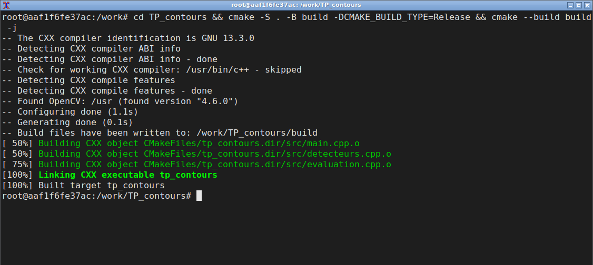
tp_contours est produit.tp_contoursUne fenêtre « Contours » affiche le résultat, sous lequel sont calculés en direct P, TFP et TFN. Sa trackbar Detecteur permet de choisir le détecteur (0 Sobel, 1 Laplace, 2 Canny, 3 les trois côte à côte). Trois fenêtres de trackbars, une par détecteur, permettent de régler les paramètres associés. Les touches n / p font défiler le lot d'images, v bascule entre la carte noir et blanc et la superposition couleur, et s enregistre l'affichage dans results/filtres/. Le calcul n'est refait que si un réglage change.
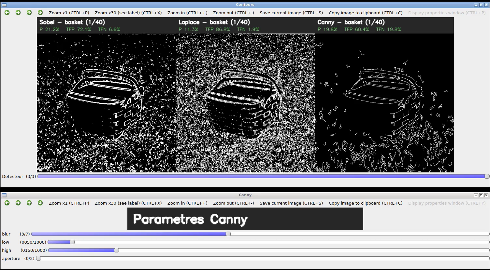
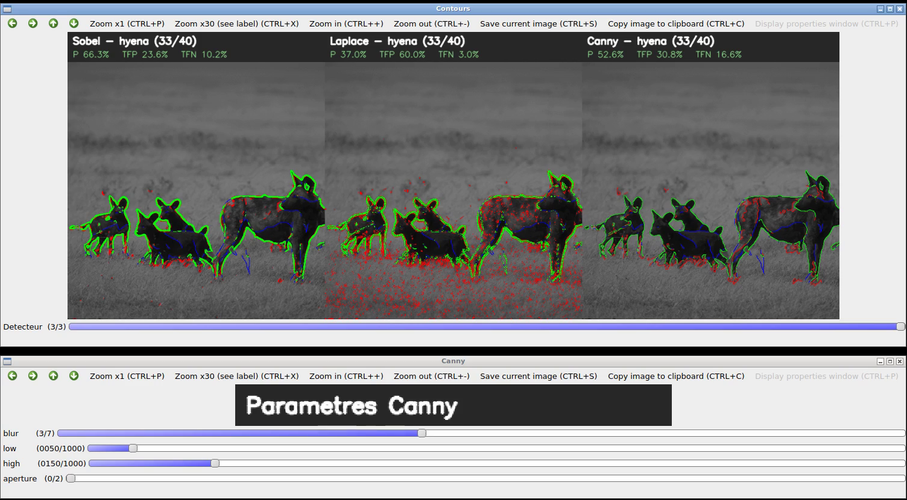
v et le passage à l'image hyena (touche n) : superposition couleur (vert : correct, rouge : faux positif, bleu : contour manqué).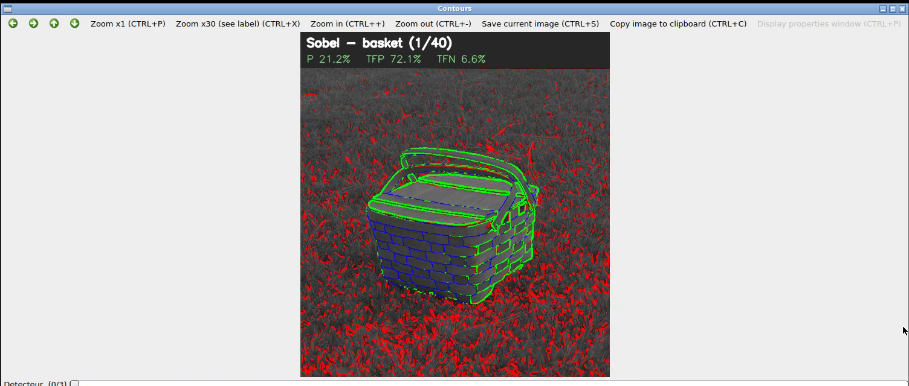
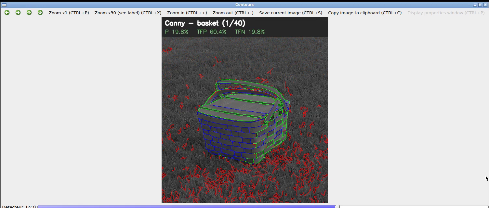
Figure 4 — Choix du détecteur avec la trackbar Detecteur de la fenêtre « Contours » (image basket).
tp_contours --batchCe mode traite le lot des 40 images avec les paramètres par défaut. Pour chaque image et chaque détecteur, il enregistre la carte de contours (results/batch/<détecteur>/), un montage original | référence | Sobel | Laplace | Canny (results/comparaison/) et une ligne de results/batch/resultats.csv contenant les 5 quantités et les 3 mesures. La dernière ligne contient les moyennes.
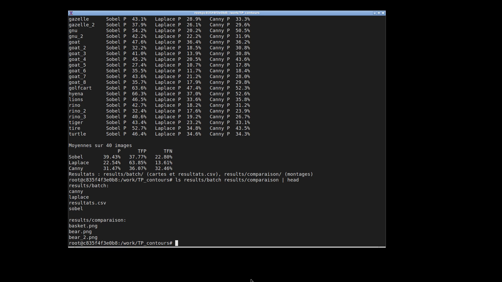
scripts/balayage.pyCe script Python (OpenCV) reproduit exactement les détecteurs et la métrique du programme C++ : il retrouve au centième près les moyennes du mode batch. Il fait varier le seuil et le flou sur les 40 images et produit les courbes de la section 7 (results/parametres/).
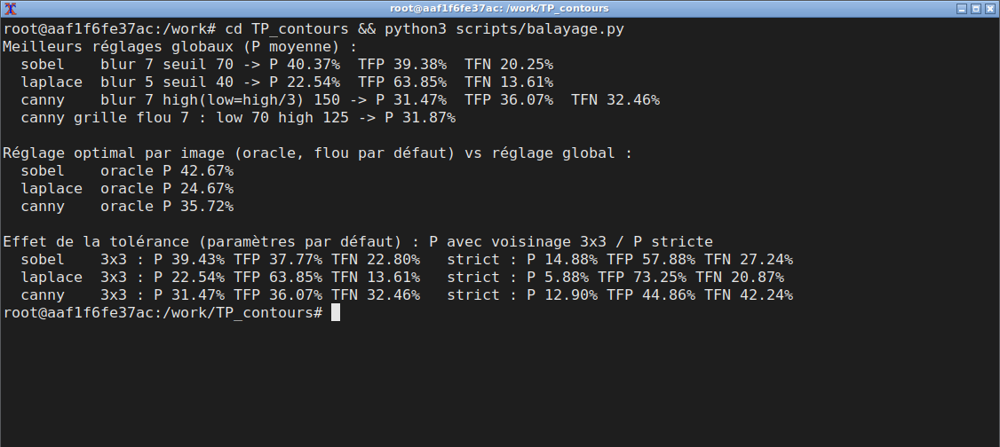
scripts/balayage.py : meilleurs réglages globaux, réglage optimal par image et effet de la tolérance.Pour comparer une image de contours calculée à sa référence, nous utilisons les cinq quantités du sujet :
On note T = corrects + faux_positifs + faux_négatifs, et on calcule :
Un tracé à la main n'est jamais exact au pixel près. Comme le suggère le sujet, un pixel détecté est compté correct s'il existe un contour de référence dans son voisinage 3×3. En pratique, on dilate la référence avec un élément structurant carré 3×3 et on fait un ET logique avec la détection. Symétriquement, un pixel de référence est un faux négatif s'il n'y a aucune détection dans son voisinage 3×3, ce qui revient à dilater la détection.
Paramètres utilisés (les meilleurs trouvés sur le lot, voir §7) : Sobel blur 5, ksize 3, seuil 70 ; Laplace blur 5, ksize 3, seuil 40 ; Canny blur 7, low 50, high 150, aperture 3.
| détectés | référence | corrects | faux positifs | faux négatifs | P (%) | TFP (%) | TFN (%) | |
|---|---|---|---|---|---|---|---|---|
| Sobel | 10 946 | 5 740 | 5 235 | 5 711 | 2 805 | 39,4 | 37,8 | 22,8 |
| Laplace | 20 944 | 5 740 | 4 866 | 16 078 | 2 307 | 22,5 | 63,8 | 13,6 |
| Canny | 6 891 | 5 740 | 2 880 | 4 011 | 2 721 | 31,5 | 36,1 | 32,5 |
Tableau 1 — Valeurs moyennes sur les 40 images (quantités en pixels). Le détail par image est en annexe (tableau 5).
Les captures ci-dessous montrent l'effet des trackbars sur l'image basket. Elle est difficile, car l'herbe est très texturée. Les valeurs par défaut donnent Sobel P = 21,2 % et Canny P = 19,8 %.
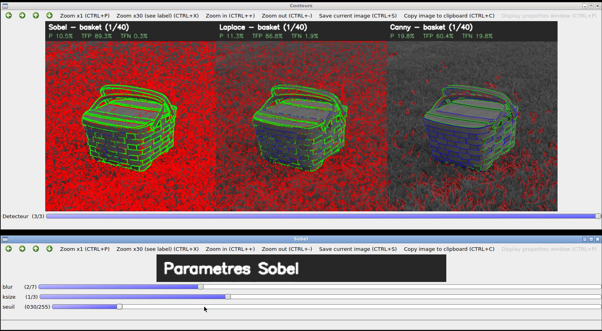
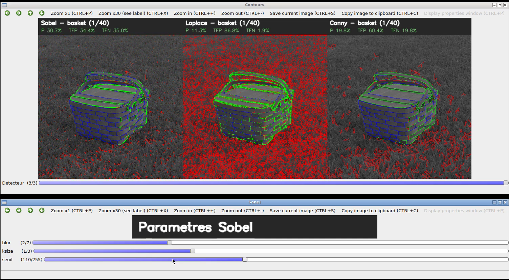
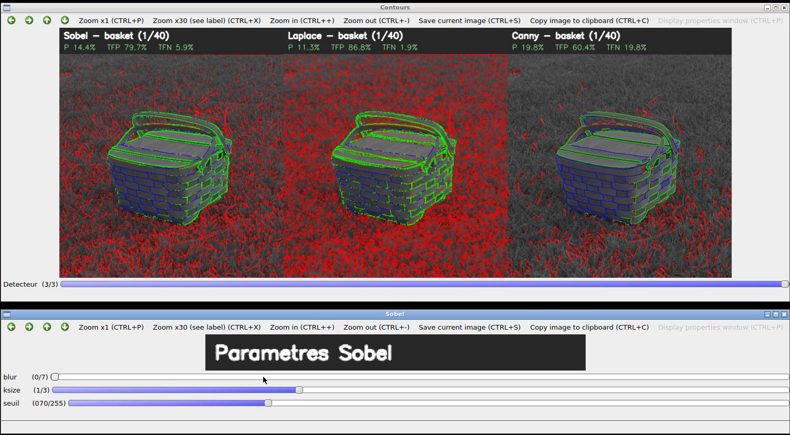
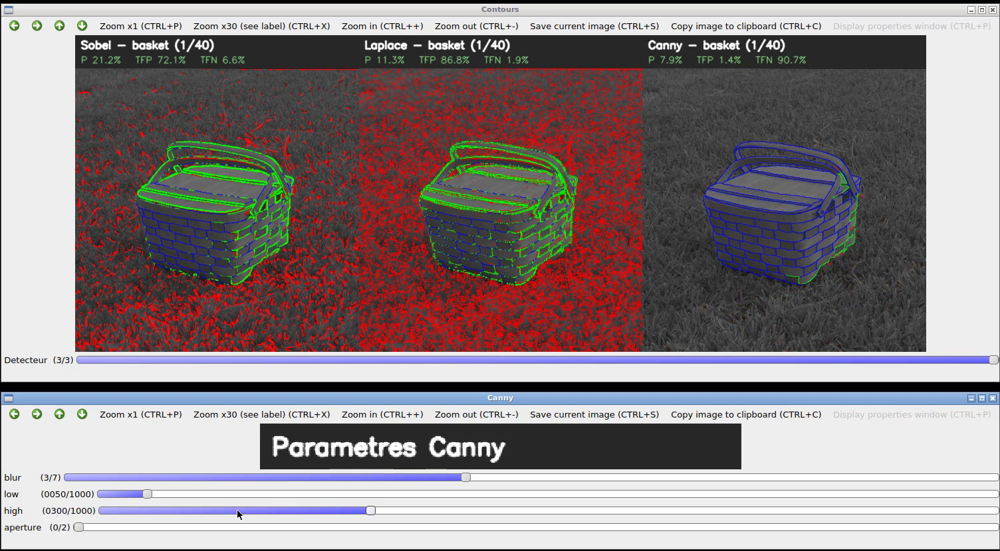
Figure 7 — Modification des paramètres avec les trackbars (vert : correct, rouge : faux positif, bleu : manqué).
Le compromis est bien visible : baisser le seuil fait passer les faux négatifs aux faux positifs, et inversement. On note aussi que, pour basket, un seuil de Sobel de 110 donne un meilleur score (30,7 %) que le seuil global de 70 : le meilleur réglage dépend de l'image. C'est ce que quantifie le réglage « oracle » plus bas.
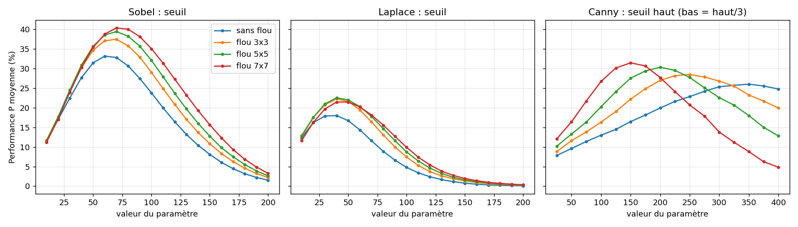
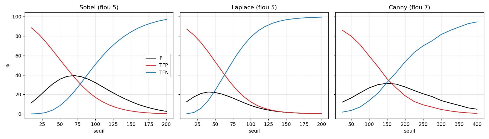
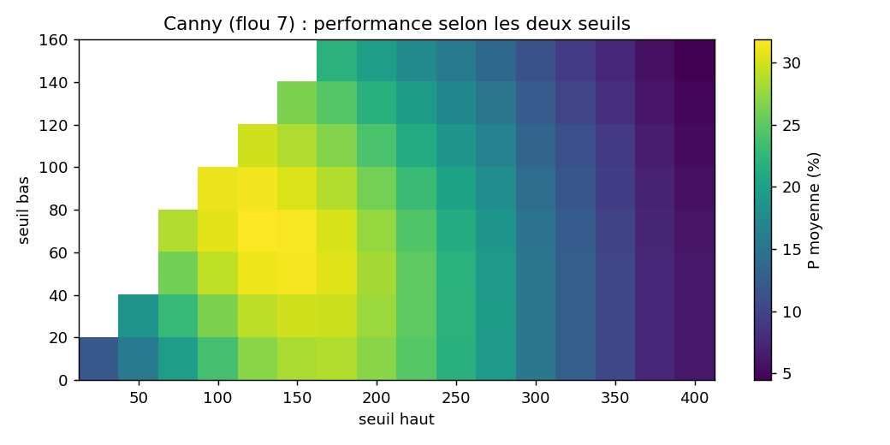
| meilleur réglage global | P global | P oracle (par image) | |
|---|---|---|---|
| Sobel | blur 7, seuil 70 | 40,4 % | 42,7 % |
| Laplace | blur 5, seuil 40 | 22,5 % | 24,7 % |
| Canny | blur 7, low 70, high 125 | 31,9 % | 35,7 % |
Tableau 2 — Meilleurs réglages trouvés par balayage (ksize = aperture = 3). Les valeurs par défaut du programme en sont très proches.
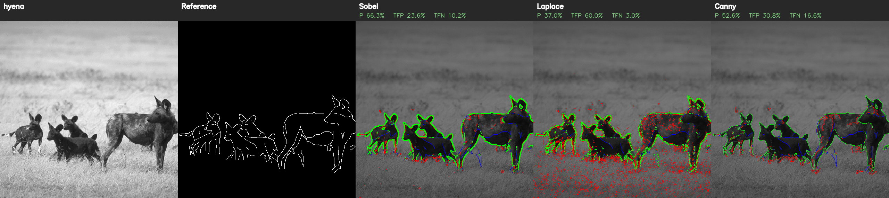
Sur hyena, le fond est flou et uniforme : les trois détecteurs retrouvent bien les silhouettes. Sobel atteint 66,3 % et Canny 52,6 %. Laplace (37,0 %) répond déjà fortement à l'herbe du premier plan. Les contours manqués (en bleu) sont surtout des contours internes peu contrastés, entre les pattes ou entre deux animaux de même teinte.
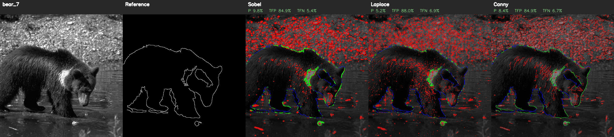
Sur bear_7, le gravier derrière l'ours produit des gradients aussi forts que la silhouette elle-même. Aucun seuil ne peut séparer les deux : les trois détecteurs passent sous 10 % de performance, avec 85 à 88 % de faux positifs. C'est la limite principale des détecteurs locaux : ils mesurent une variation d'intensité, pas la frontière d'un objet. Les images de chèvres et d'ours dans l'herbe ou les rochers donnent les plus mauvais scores pour la même raison.
Canny est le seul détecteur qui produit des contours d'un pixel d'épaisseur, placés sur le maximum du gradient grâce à la suppression des non-maxima. Sa localisation est donc la meilleure : visuellement, ses contours sont fins et continus, et ils suivent fidèlement le tracé de référence. Sobel produit des bandes de 2 à 4 pixels centrées sur le contour, et Laplace des contours doubles (un de chaque côté du passage par zéro). L'effet de la tolérance confirme cette analyse : en position exacte, le rapport entre Canny et Sobel passe de 0,80 à 0,87, car Canny perd relativement moins quand on exige la position exacte.
| P avec voisinage 3×3 | P en position exacte | TFN en position exacte | |
|---|---|---|---|
| Sobel | 39,4 % | 14,9 % | 27,2 % |
| Laplace | 22,5 % | 5,9 % | 20,9 % |
| Canny | 31,5 % | 12,9 % | 42,2 % |
Tableau 3 — Effet de la tolérance (paramètres par défaut, moyenne sur les 40 images).
Selon la mesure P demandée, Sobel est le meilleur détecteur sur ce lot, devant Canny puis Laplace. Ce classement doit cependant être nuancé :
Si l'on veut des contours exploitables (fins, continus, sans bruit), nous recommandons Canny avec un flou 7×7 et des seuils autour de 50 / 150. Si seule compte la mesure P du sujet, Sobel avec un flou 5 à 7 et un seuil de 70 donne le meilleur score.
| Sobel | Laplace | Canny | |
|---|---|---|---|
| Performance P moyenne | 39,4 % | 22,5 % | 31,5 % |
| Faux positifs | moyens | très nombreux | les plus faibles |
| Faux négatifs | moyens | les plus faibles | les plus élevés |
| Localisation / épaisseur | bandes de 2 à 4 px | contours doubles | 1 px, bien centrés |
| Sensibilité au bruit | moyenne | forte | faible (hystérésis) |
| Réglage | simple (1 seuil relatif) | simple (1 seuil relatif) | 2 seuils absolus, liés au flou |
| Coût de calcul | 2 convolutions | 1 convolution | le plus élevé |
Tableau 4 — Comparaison qualitative et quantitative des trois détecteurs.
Nous avons programmé et évalué trois détecteurs de contours sur les 40 images de la base RUG. Avec la mesure du sujet et une tolérance 3×3, Sobel obtient la meilleure performance (39,4 %), devant Canny (31,5 %) et Laplace (22,5 %). Canny offre la meilleure localisation et le moins de faux positifs, alors que Laplace est très sensible au bruit et à la texture.
L'étude des paramètres montre que le lissage gaussien est indispensable, que le seuil règle le compromis entre faux positifs et faux négatifs, et qu'un réglage global est presque aussi bon qu'un réglage par image. Les performances restent modestes dans l'absolu : la principale difficulté est la texture du fond, que tous les détecteurs locaux détectent mais que la référence ignore. Pour aller plus loin, il faudrait des méthodes qui intègrent une information plus globale : contours multi-échelles, suppression de la texture, ou détecteurs appris.
| image | Sobel (%) | Laplace (%) | Canny (%) | ||||||
|---|---|---|---|---|---|---|---|---|---|
| P | TFP | TFN | P | TFP | TFN | P | TFP | TFN | |
| basket | 21,2 | 72,2 | 6,6 | 11,3 | 86,8 | 1,9 | 19,9 | 60,4 | 19,8 |
| bear | 35,1 | 58,4 | 6,5 | 8,3 | 90,7 | 1,0 | 34,0 | 37,6 | 28,4 |
| bear_2 | 41,5 | 26,1 | 32,4 | 22,6 | 41,5 | 35,9 | 27,1 | 12,6 | 60,3 |
| bear_3 | 24,5 | 54,7 | 20,8 | 9,2 | 63,4 | 27,5 | 18,8 | 48,6 | 32,6 |
| bear_4 | 23,1 | 72,5 | 4,4 | 12,8 | 82,2 | 5,0 | 16,1 | 77,5 | 6,4 |
| bear_5 | 27,9 | 58,3 | 13,7 | 12,3 | 81,8 | 5,9 | 29,3 | 39,2 | 31,4 |
| bear_6 | 14,6 | 70,5 | 14,9 | 7,8 | 73,3 | 18,9 | 11,5 | 71,3 | 17,1 |
| bear_7 | 9,8 | 84,9 | 5,4 | 5,1 | 88,0 | 6,9 | 8,4 | 84,9 | 6,7 |
| bear_8 | 19,1 | 63,9 | 17,0 | 6,2 | 87,5 | 6,3 | 10,9 | 75,5 | 13,5 |
| bears | 33,4 | 55,6 | 10,9 | 14,3 | 78,8 | 6,9 | 30,6 | 50,1 | 19,2 |
| brush | 29,1 | 41,8 | 29,1 | 21,4 | 63,8 | 14,8 | 21,8 | 25,8 | 52,4 |
| buffalo | 59,6 | 18,7 | 21,8 | 30,6 | 59,4 | 10,0 | 49,3 | 25,9 | 24,8 |
| buffalo_2 | 44,0 | 32,9 | 23,1 | 25,0 | 56,9 | 18,1 | 35,2 | 41,6 | 23,3 |
| elephant | 52,2 | 8,7 | 39,1 | 34,1 | 32,5 | 33,4 | 43,2 | 10,3 | 46,5 |
| elephant_2 | 46,6 | 9,6 | 43,8 | 26,8 | 26,3 | 46,9 | 27,1 | 3,4 | 69,5 |
| elephant_3 | 49,9 | 8,7 | 41,4 | 32,4 | 34,6 | 33,0 | 43,3 | 5,9 | 50,8 |
| elephant_4 | 43,8 | 21,1 | 35,1 | 38,5 | 46,4 | 15,1 | 40,0 | 24,5 | 35,5 |
| elephants | 51,1 | 18,6 | 30,3 | 44,2 | 42,5 | 13,4 | 40,8 | 16,0 | 43,2 |
| elephants_2 | 30,9 | 5,4 | 63,7 | 25,1 | 36,0 | 38,9 | 36,9 | 12,5 | 50,6 |
| gazelle | 43,1 | 18,3 | 38,5 | 28,9 | 65,2 | 5,9 | 33,3 | 19,0 | 47,7 |
| gazelle_2 | 37,9 | 22,5 | 39,6 | 26,1 | 64,0 | 9,9 | 29,6 | 44,6 | 25,8 |
| gnu | 54,2 | 36,5 | 9,3 | 20,2 | 75,0 | 4,8 | 50,5 | 30,7 | 18,8 |
| gnu_2 | 42,2 | 30,0 | 27,8 | 22,2 | 56,3 | 21,5 | 31,9 | 20,5 | 47,5 |
| goat | 47,6 | 29,0 | 23,4 | 36,4 | 55,4 | 8,3 | 36,1 | 22,9 | 41,0 |
| goat_2 | 32,2 | 26,4 | 41,5 | 18,5 | 76,7 | 4,7 | 30,8 | 46,2 | 23,0 |
| goat_3 | 41,0 | 38,7 | 20,3 | 14,0 | 84,2 | 1,8 | 30,8 | 43,7 | 25,4 |
| goat_4 | 45,2 | 43,6 | 11,2 | 20,5 | 65,7 | 13,8 | 43,6 | 22,9 | 33,5 |
| goat_5 | 27,4 | 56,8 | 15,8 | 10,7 | 78,8 | 10,5 | 17,8 | 13,6 | 68,6 |
| goat_6 | 35,5 | 48,1 | 16,4 | 11,7 | 85,1 | 3,3 | 18,4 | 74,8 | 6,7 |
| goat_7 | 43,6 | 44,6 | 11,8 | 21,2 | 74,9 | 3,9 | 28,0 | 60,0 | 12,0 |
| goat_8 | 35,7 | 38,3 | 26,0 | 17,9 | 68,8 | 13,2 | 29,8 | 50,2 | 20,0 |
| golfcart | 63,6 | 13,0 | 23,5 | 47,4 | 33,9 | 18,7 | 52,3 | 12,2 | 35,5 |
| hyena | 66,2 | 23,6 | 10,2 | 37,0 | 60,0 | 3,0 | 52,6 | 30,8 | 16,6 |
| lions | 46,5 | 37,1 | 16,4 | 33,6 | 54,0 | 12,4 | 35,8 | 34,6 | 29,6 |
| rino | 42,8 | 37,3 | 19,9 | 18,2 | 69,4 | 12,4 | 31,2 | 2,6 | 66,1 |
| rino_2 | 32,4 | 58,0 | 9,6 | 17,6 | 76,4 | 6,0 | 23,9 | 63,0 | 13,1 |
| rino_3 | 40,6 | 40,0 | 19,4 | 19,2 | 75,8 | 5,0 | 26,7 | 57,2 | 16,0 |
| tiger | 43,4 | 40,4 | 16,2 | 23,2 | 73,0 | 3,7 | 33,1 | 28,8 | 38,1 |
| tire | 52,7 | 19,9 | 27,4 | 34,8 | 41,8 | 23,3 | 43,5 | 14,0 | 42,5 |
| turtle | 46,4 | 25,9 | 27,7 | 34,6 | 47,2 | 18,3 | 34,3 | 26,7 | 39,0 |
| moyenne | 39,4 | 37,8 | 22,8 | 22,5 | 63,8 | 13,6 | 31,5 | 36,1 | 32,5 |
Tableau 5 — Mesures par image (meilleur P de chaque ligne en vert). Les 5 quantités brutes sont dans results/batch/resultats.csv.
cd TP_contours cmake -S . -B build -DCMAKE_BUILD_TYPE=Release cmake --build build ./build/tp_contours # mode interactif (trackbars) ./build/tp_contours --batch # lot de 40 images -> results/batch, results/comparaison python3 scripts/balayage.py # étude des paramètres -> results/parametres